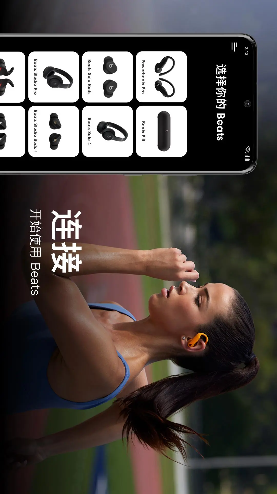
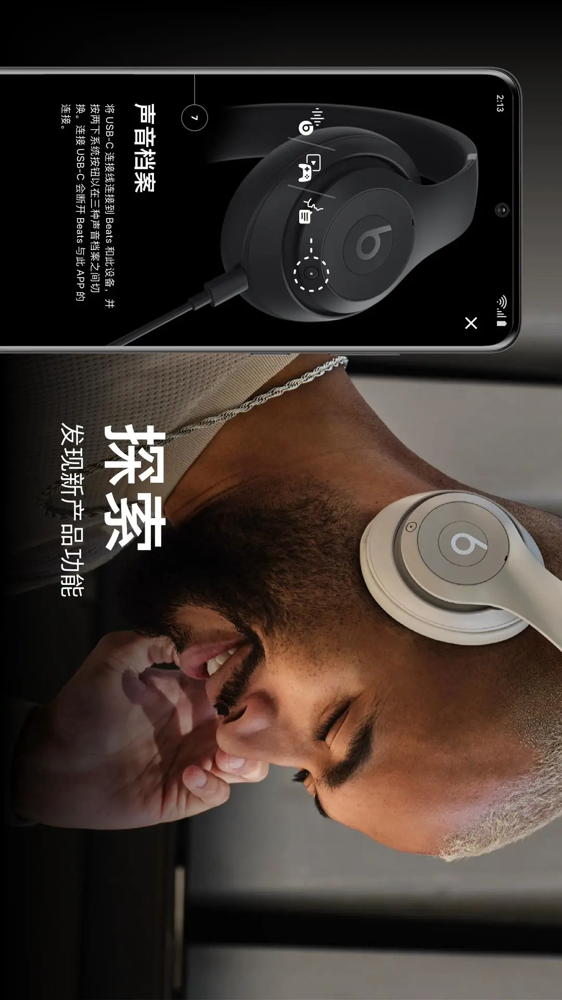

Beats 安卓应用横评：苹果生态外的耳机管家，值不值得装
Beats 应用在安卓上的定位、差异化功能与取舍——从设备管理到固件更新，它和同类工具比到底站在什么位置，适合谁、不适合谁。
蓝牙耳机的配套应用，赛道上一直很拥挤。索尼有 Headphones Connect、Bose 有自己的 Connect 应用，甚至一些国产耳机厂商也在做独立的手机端管理工具。Beats 作为苹果旗下的品牌，它的安卓版应用在这条赛道里属于一个有点尴尬但又绕不开的存在。
如果你用的是安卓手机配上一副 Beats 耳机——不管是 Studio Buds、Solo Pro 还是 Powerbeats——这个应用的存在感和重要性，其实远远超过大多数人的预期。Beats官网在安卓侧的重心一直不是硬件本身，而是把这些配套功能补齐。我用了大半年，从最初"装了就扔在角落"到后来几乎每周都要打开一次调东西，中间踩过的坑、发现的惊喜，值得整理成一篇横评。
同类工具的格局
先说这个类目大致是什么状态。高端耳机的配套应用，功能框架其实大同小异：连接管理、电量显示、降噪调节、固件更新，这几项是标配。真正拉开差距的，是细节粒度和生态绑定这两件事。
- 生态绑定这块，苹果自己的耳机在 iPhone 上基本不需要应用介入——系统设置里藏了大部分功能。但到了安卓，系统只给你最基础的蓝牙连接，降噪模式、电量拆分、固件推送这些全靠独立应用兜着。
- 细节粒度则是各家的差异化战场：有的把降噪曲线做得极其精细，有的在预设模式上堆得很花，还有的侧重于通话质量的调校。
Beats 应用的位置，坦白说在"中间偏上"。它没有索尼那种几十种环境模式的复杂矩阵，也不像 Bose 那样把 EQ 曲线开放到像素级。但它在一台应用管全系列这件事上做得很干净——从耳机到 Pill 音箱，从头戴到入耳，统一一套界面逻辑，切换成本极低。
它的差异化优势
我挑两个用过之后才觉得"别家没有"或者"做得明显更好"的点展开。
多台设备的统一管理
同时持有两副 Beats 耳机（比如通勤用 Studio Buds、运动用 Powerbeats）的人，会直接感受到这个应用的舒服之处：所有已连接设备平铺在首页卡片上，电量、固件版本、最近连接时间一眼看清。点进任意一台，界面结构完全一致——左中右、触控手势、提示音量、固件更新，入口位置和操作逻辑没有任何变化。
这件事说起来简单，但真对比过就知道不是标配。不少厂商的做法是：不同产品线做不同应用，或者同一应用内界面风格随机型切换而变化。Beats 的"一套界面通吃全系列"，反而成了一种稀缺的稳定感。

Pill 音箱的社交玩法延伸
Beats Pill 系列音箱的两个功能——"共享扬声器"和"双音箱组合"——在应用里被独立做成了两个清晰的入口。共享扬声器让多台手机轮流控制一台音箱的播放权，朋友聚会时不用反复断连配对；双音箱组合则能让两台 Pill 协同出声，组成扩音或立体声对。
这两个功能在安卓生态里相当少见。大多数同价位音箱要么只支持单设备独占，要么把多音箱配对做成一个复杂的工程。Beats 给的答案很直接：一键发起、一键解散，整个流程控制在三五步之内。共享模式还明确支持 iPhone 加入——对跨平台用户来说，这点友好度很加分。
提示音量的独立通道设计
一个小但高频的痛点：深夜用耳机时，开机和连接的"叮"声往往比你想的要响。很多配套应用要么没有这个设置，要么把提示音量和媒体音量绑在一起调。Beats 应用给了一条独立的"提示声音量"滑块——往左拉到最左，深夜在地铁里连接成功几乎听不到提示音；往右推到最右，找不着耳机时靠提示声定位成了现实可用的功能。
这类独立通道设计在 Beats 应用里还有几处，比如充电盒的提示声有单独开关、通话麦克风的方向可以指定。把这些从主音量里拆出来，本质上是承认了"耳机在不同场景下有不同的音量需求"——这个思路比"一个滑块管一切"的粗暴方案要成熟得多。
它的取舍与短板
优势不能白拿。Beats 应用的简洁和统一，是用另一些东西换回来的。
第一，上手门槛其实不低。Beats下载的安装包不大，装上之后界面看起来干净，但很多关键入口藏得比你想象的深。固件更新在设备屏幕底部、内部参数区域的旁边；提示音量也不是一个显眼的图标按钮，而是滚动到中段才能找到的滑块。新用户第一次打开时，很容易觉得"这应用好像什么都没有"。官方给的解决方案是Beats文档——它的中文文档做得相当细，每一个设置项都有独立的文章。但这也意味着，你要频繁翻文档才能把功能玩透，而不是点开应用就能直觉上手。
第二，EQ 和音效这块偏保守。它有"探索声音配置"的入口，给了少量预设，但完全没有开放自定义曲线。对那些喜欢调 EQ 的音频玩家来说，这一块等于没给。和索尼、Bose 那些可以拖点拉曲线的竞品比，Beats 应用在音效定制上显得太克制了——或许是苹果一贯的"给你最好的默认，不给你乱改的空间"思路延续到了安卓。
第三，固件更新的节奏不算快。我查过几次固件版本，应用里经常显示"已为最新"但社区已经有新版本在推。而且版本号本身不含日期语义，不能按数字大小猜新旧，这点要特别注意——别看到 1.5 就觉得比 1.4 新，反过来也不一定。只能信应用有没有更新按钮。

选购结论
什么样的人应该装 Beats 应用？
- 你用安卓手机、持有至少一件 Beats 设备（耳机或 Pill）。不装的话，你会错过电量拆分显示、降噪模式切换、固件更新这些基础功能——不是锦上添花，是"安卓系统根本做不到"的东西。
- 你可能同时有不止一件 Beats 设备，或者打算入第二件。统一界面和跨产品线的一致逻辑会让后续扩展成本很低。
- 你用 Pill 音箱、偶尔需要多人轮流放歌或双音箱组合。这两个功能在同价位里几乎找不到替代品。
什么样的人其实可以不装？
- 你对 EQ 有强需求，喜欢精细调校音效曲线。Beats 应用给的预设就那么几个，不支持自定义，这块会让你觉得憋屈。
- 你只用一副耳机，而且降噪模式固定，从来不想换。那系统级的蓝牙连接管理可能够用了，应用的额外价值就不太明显。
最后给一句明确的推荐：对 Beats 设备的安卓用户来说，这不是装不装的问题，是必须装。 它不是一款花哨的应用，甚至在音效调教这块相当保守，但它把"让 Beats 设备在安卓上发挥完整能力"这件事做到了位——没有它，你手里的耳机可能只发挥了六七成功力。这篇评测涉及的细节要点，我顺手整理进了 GitHub、Gitee 和 GitCode 三处资料目录，想逐行核对或补充的可以直接翻过去。